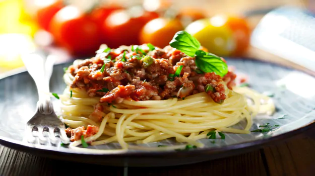

Spaghetti Bolognese Recipe

A quick breakfast or a mid meal, this Spaghetti Bolognese recipe is just super easy and quick to cook up. An easy one pot meal with Bolognese sauce which is a meat-based sauce for pasta which originated from Bologna, Italy. This can be that staple dish that you'll make over and over again!
Ingredients
- 2 Tbsp Olive oil
- 2 Onions, chopped
- 1/2 Garlic, chopped
- 1 Kg Lamb/chicken (minced)
- 1/2 tsp Red pepper
- 4-5 Tomatoes, chopped
- 1 Cup Tomato puree
- 2 Bay leaves (dried)
- 1 Tbsp Thyme
- 1 Tbsp Oregano (dried)
- 1 tsp Salt
- 1/2 tsp Black pepper
- 1 Cup Red wine
- 500 Gram Spaghetti (cooked), boiled
How to make Spaghetti Bolognese step-by-step
- Heat some oil in the pan.
- Then add garlic, onion & fry it well.
- Then add the meat to it and mix it well.
- Add a dash of red pepper.
- Once the meat turns brown add the chopped tomatoes and the tomato puree.
- Add salt and pepper.
- Add the red wine.
- Mix all well. Cover it and let it cook for 15-20 minutes.
- Once done, pour this Bolognese sauce over the spaghetti.
- Garnish with some cheese and serve.